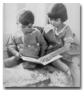
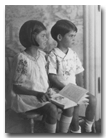
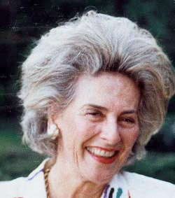

Suffern, New York

Suffern House

Alex & Mary Ella

Alex (3) & Mary Ella (5) 1927
Tallman, New York
|  |
Mary-Ella Henderson was born in Suffern, New York on April 17, 1922. She has four children: Robert, Susan, Sally, and Peter Hinrichs. |
|
|
Important
Facts
|
||
| April 17, 1922 | Born at 6:45 A.M. at the Good Samaritan Hospital in Suffern, New York. Mary-Ella is the first child of Alexander D. Henderson Jr. and Mary Barnes Anthony. Source: Mary's Family Connections. |
Suffern, New York |
|
A postcard was made of her grandpaents' Suffern house. The printing at the top of the potcard reads: "Residence of Mr. A. D. Henderson, Suffern, N.Y." Source: Suffern Free Library, Suffern, New York; postcard; col.; 3 x 5 in. (7.7 x 12.7 cm.). |
| 1922 - 1929 | Her grandparents built a house accross Lived in Suffern, New York across the road from her grandparents. |
Suffern House |
| Jan 25, 1925 | Grandfather Henderson Sr. died in Suffern, New York. | |
| 1929 - 1932 | Her family moved into a large two-story home in Tallman, New York. Lived in Tallman for four years. They had a chauffeur, cook, and an upstairs maid. Her father kept his polo pony (Ginger) in the barn. The property had an apple orchard. Grandmother Anthony had a lovely cottage on the property (behind the orchard) They had a red setter named "Ciders". | |
| 1930 | The 1930 U.S. Census lists Alexander D. Henderson (35), Nonny (30), Mary Ella (7), and Alexander (5) living in the Rockland county. | |
| Grandmother Henderson (Ella Brown) would often send her chauffeur and car to take Mary-Ella to her home for a visit. She would read to her at bedtime Bible stories from the Old Testament. The estate had a colored butler, James, and cook. She had a working farm with a cow, large vegetable garden, stocked fish, and a huge greenhouse. Mary-Ella remembered playing with the gardener's children at times and the beautiful flower gardens. |
 Alex & Mary Ella | |
| 1932 | The family moved to Hudson View Gardens duplex apartment at 1836 Pinchurst Avenue, overlooking the Hudson River. | |
| 1934 | Mary-Ella's mother and father were separated. Source: Mary's Family Connections, pg. 111. | |
| 1935 | Her parents were divorced. Source: Mary's Family Connections, pg. 111. | |
| 1939 | Alec and Mary-Ella moved to a two-bedroom apartment on Palisade Avenue in Englewood, New Jersey and were brought up by their mother. | |
| Mary-Ella went to the Dwight School for Girls on Palisade Avenue in Englewood, New Jersey. |
 Alex (3) & Mary Ella (5) 1927 |
|
| January 17, 1940 | Grandmother Ella Brown Henderson died in Suffern, NY. Source: ProQuest Historical Newspapers The New York Times, pg. 23. | |
| October 23, 1943 | Mary-Ella married Stuart Walter Hinrichs at Saint James Church, Madison Avenue, New York. | |
| August 31, 1946 | Robert Stuart Hinrichs was born. | |
| June 26, 1949 | Susan Hinrichs was born. | |
| 1949 | Grandmother Laura Frontgous Anthony died (Nonny's mother) in Ridgewood, New Jersey. | |
| April 5, 1953 | Sarah Hinrichs was born. | |
| September 23, 1957 | Peter Anthony Hinrichs was born. | |
| March 30, 1985 | Mary-Ella married John Sloane Griswold at Christ Church, Greenwich, Connecticut. | |
| January 13, 2014 | Mary-Ella died at Hobe Sound, Martin, Florida. Source: Find A Grave for Mary-Ella Hinrichs (Memorial ID 198136233). |